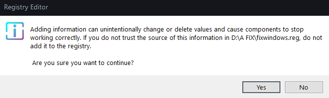

Solutions
How it works
Prices
VINA trợ lý ảo Offline
giải pháp làm bạn với học sinh con một
giúp đỡ học tập, thư giãn, ngăn chặn căng thẳng
Phạm Quang Bách - PTNK DHQG HCM (2021-2024)
Mọi trải nghiệm tốt hoặc trục trặc hay góp ý, xin bạn hãy để lại
bình luận dưới
video này
Tải xuống ngay! (hỗ trợ Windows 10 và Windows 11)
(khi tải xong, khoan hãy cài vội, hãy xem hướng dẫn dưới)
(khi tải xong, khoan hãy cài vội, hãy xem hướng dẫn dưới)
Tải xuống phần phụ thuộc của VINA (registry)
Những tính năng ưu việt của VINA
 Hoạt động Offline
Đồng hành với bạn trong bất cứ nơi đâu với nhiều tính năng thú
vị.
Hoạt động Offline
Đồng hành với bạn trong bất cứ nơi đâu với nhiều tính năng thú
vị.
 Hoạt động Online
VINA có hỗ trợ bạn tìm kiếm google nhanh chóng khi wifi khả
dụng
Hoạt động Online
VINA có hỗ trợ bạn tìm kiếm google nhanh chóng khi wifi khả
dụng
 Nhận diện căng thẳng
Sẵn sàng cảnh báo căng thẳng cho bạn để ngăn chặn kịp thời
căng thẳng, tránh dẫn đến những chứng bệnh trầm cảm và căng
thẳng mãn tính
Nhận diện căng thẳng
Sẵn sàng cảnh báo căng thẳng cho bạn để ngăn chặn kịp thời
căng thẳng, tránh dẫn đến những chứng bệnh trầm cảm và căng
thẳng mãn tính
 Quản lý công việc
Tích hợp chức năng ghi chú thông minh, có thể nói lịch trình
của bạn bằng giọng nói tự nhiên, giúp bạn dễ dàng theo dõi và
nắm bắt kế hoạch
Quản lý công việc
Tích hợp chức năng ghi chú thông minh, có thể nói lịch trình
của bạn bằng giọng nói tự nhiên, giúp bạn dễ dàng theo dõi và
nắm bắt kế hoạch
(Bạn có thể xem video tóm tắt bằng cách nhấn nút dưới đây, hoặc xem hướng dẫn phía dưới)
2) Bạn hãy dựa vào bài viết này (đối với Win10) hoặc bài viết này (đối với Win11) và làm đến bước 5 của Win10 hoặc bước 4 của Win11 (tick hết các ô chứ không chừa ô nào như hướng dẫn) để cài tiếng Việt cho trợ lý ảo. Bạn làm tương tự đối với tiếng Anh nếu máy bạn chưa cài tiếng Anh. (Quá trình này mất 1ph, rất nhanh chóng)
3) Bạn hãy nhấn đúp chuột vào file phần phụ thuộc bạn mới tải về, sau đó nhấn Run anyway và sau đó nhấn Yes.
 4) Hãy chạy chương trình VINA v1.0 bạn vừa tải về và tiến hành cài đặt (để mọi thứ mặc định và cài đặt). Quá trình cài đặt mất 2 phút. Khuyến khích nên tắt các phần mềm diệt Virus. Do phần mềm VINA còn mới trên thị trường, một số phần mềm diệt Virus chưa cập nhật kịp và nhận diện nhầm VINA có chứa file nguy hiểm.
5) Bạn chạy chương trình VINA bằng cách nhấn đúp chuột vào biểu tượng VINA ở Desktop, hoặc bạn cũng có thể vào Search của Windows để tìm chương trình và chạy
6) Để gọi trợ lý ảo VINA, bạn hãy nói câu "Vi na, Vi na, Vi na" ở tốc độ vừa phải, rõ ràng câu chữ . Sau khi trợ lý ảo trả lời bạn, bạn có thể đưa ra những yêu cầu sau cho trợ lý:
- Hỏi mấy giờ / hỏi ngày, tháng, năm
- Hỏi bạn khỏe không / ai tạo ra bạn / VINA là ai
- Kể chuyện cười / chuyện đùa
- Mở nhạc / phát một bài hát / thư giãn
- Mở trò chơi
- Tạo ghi chú / mở ghi chú / viết thêm ghi chú
- Hỏi lịch trình / ghi chú có gì / công việc là gì
- Mở nhận dạng căng thẳng
- VINA có thể làm gì / chức năng / khả năng
- Tắt máy (nghĩa là chỉ tắt trợ lý ảo VINA, không phải là shutdown máy tính)
Những tính năng trên thuộc những tính năng có thể hoạt động cả Offline lẫn online
Những tính năng dưới đây thuộc những tính năng chỉ khả dụng khi có internet:
- Tra google / mở trình duyệt
- Nhiệt độ hiện tại
Lưu ý: khi bạn gọi "Vi na, Vi na, Vi na", trợ lý ảo báo hiệu âm thanh đôi và trả lời bạn chứng tỏ trợ lý ảo đã được kích hoạt và chờ lệnh, khi này bạn gọi "Vi na" lần nữa trợ lý ảo sẽ không hiểu và báo âm thanh đơn. Sau khi có âm thanh đôi, nếu lệnh không hợp lệ hoặc VINA không nghe rõ lắm hoặc bạn không nói gì cả, VINA sẽ báo âm thanh đơn. Sau khi âm thanh đơn được báo thì VINA ở trạng thái ngủ. Bạn có thể gọi "Vi na, Vi na, Vi na" để kích hoạt trợ lý và nói yêu cầu của bạn.
Lời cảm ơn
Em xin chân thành cảm ơn sâu sắc đến ban tổ chức cuộc thi PIISE 2022 đã tạo cơ hội cho em được tham gia cuộc thi này. Nhờ có sự hướng dẫn tận tình của các thầy cô và các anh chị trong ban tổ chức qua các buổi workshop, em đã hoàn thành bản báo cáo nghiên cứu khoa học của mình thành công.Dự án này thành công không chỉ nhờ sự cống hiến hết mình của em mà còn nhờ sự động viên và khích lệ từ cha mẹ em. Em muốn gửi lời cảm ơn đến cha mẹ, những người luôn lo lắng và quan tâm chăm sóc em mỗi khi em thức khuya để nghiên cứu. Em cũng gửi lời cảm ơn đến những sinh viên, tiến sĩ trong và ngoài nước đã gầy dựng một nền móng về xử lý ngôn ngữ tự nhiên và nhận dạng căng thẳng cơ bản để em có thể phát triển chúng lên một tầm mới.
-Phạm Quang Bách